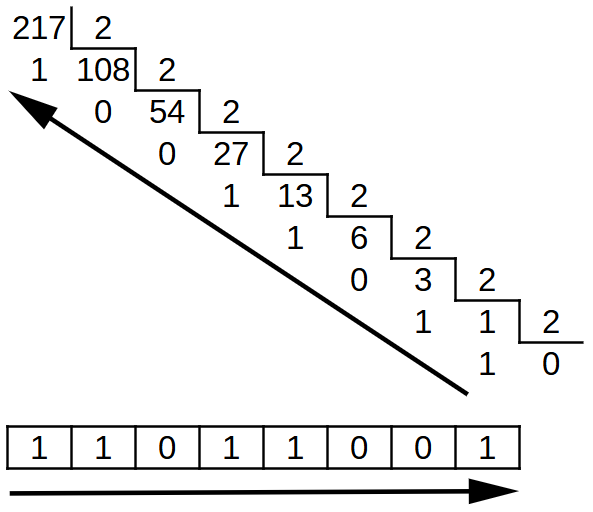
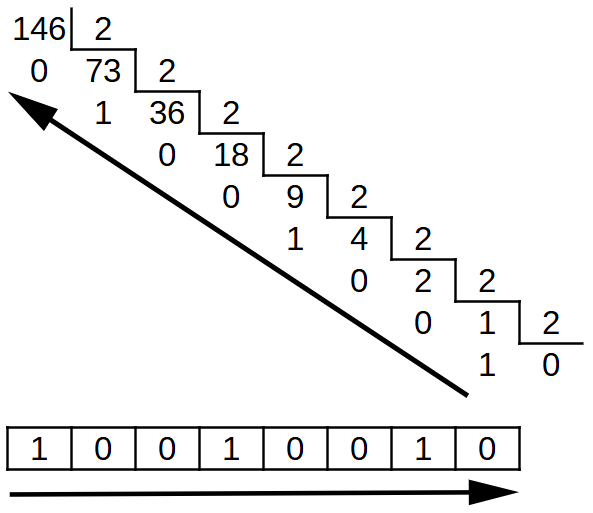
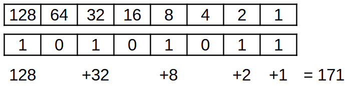

4. El sistema binari¶
Digital Electronics funciona amb dos valors vàlids, activat i desactivat. El sistema binari és un sistema de numeració que només utilitza dues figures, zero (0) i una (1), de manera que s’adapta molt bé per representar els dos estats d’electrònica digital.
Gairebé tots els ordinadors moderns es basen en l'electrònica digital i el seu sistema de numeració i representació de la informació és el sistema binari.
Compte en binari¶
La taula següent mostra els primers 16 números en decimal i binari, començant per zero i acabant en el valor de quinze:
{kind=link}
Com es pot veure, hi ha algunes regles en números binaris que ens poden ajudar a construir la taula amb el compte binari:
- Al binari només utilitzen zero i un dígit.
- El decimal zero correspon a tots els dígits binaris a zero.
- El dígit binari a la dreta, que és el menor valor, canvia constantment de zero a un, ja que comptem un número més. 0 1 0 1 0 1 0 1 ...
- El segon dígit binari que comença la dreta canvia cada ** dos ** números de zero a un. 0 0 1 1 0 0 1 1 ...
- El tercer dígit binari que comença a la dreta canvia cada ** quatre ** números de zero a un. 0 0 0 1 1 1 1 ...
- El quart dígit binari que comença a la dreta, que és el més valor, canvia cada ** vuit ** números de zero a un. 0 0 0 0 0 0 0 0 1 1 1 1 1 1 1.
Conversió decimal a binària¶
Els humans estan acostumats a comptar i veure números en notació decimal, per la qual cosa és convenient saber convertir qualsevol nombre decimal en notació binària.
Per convertir un nombre decimal al nombre binari, dividirem el nombre per dos consecutivament fins que no hi hagi cap valor a dividir. El nombre binari deixarà les restes de les divisions consecutives, de manera que el primer descans obtingut serà el dígit binari de menys pes i el darrer descans obtingut serà el dígit binari de major pes:
{kind=link}

Procés per convertir un nombre de decimals a binaris dividint consecutivament per dos.¶
Un altre exemple de conversió del número decimal 146 al binari:
{kind=link}

Procés per convertir un nombre de decimals a binaris dividint consecutivament per dos.¶
Conversió binària a decimal¶
Una manera senzilla de convertir un número binari en un nombre decimal és crear una taula amb el valor de cada dígit binari.
El primer dígit binari a la dreta, el que té el valor més baix, té un valor d’un (1). El segon dígit binari de la dreta té un valor de dos (2). Els valors augmenten així, multiplicant -se per dos. A la vuitena posició, el valor del dígit binari és de 128.
Un cop creada la taula dels valors de cada dígit binari, només cal afegir aquells valors que corresponguin a un del número binari:
{kind=link}

Conversió binària a decimal.¶
Exercicis¶
Feu una taula amb números binaris de zero a 31 mitjançant els estàndards descrits a la secció "Compte in Binary".
No oblideu deixar prou espai per a 5 dígits binaris.
Converteix el següent decimal en números binaris:
97
137
156
229
245
Converteix el següent binari en nombres decimals:
1 0 0 0 1 1 1 1 1
1 0 1 0 0 1 1 0
1 1 0 0 0 0 1 1 1
1 1 1 0 1 1 0
1 1 1 1 1 1 1 0 1